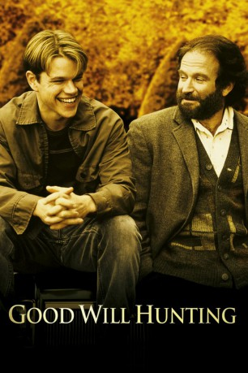

#2854 Good Will Hunting - Der gute Will Hunting
Alternativ: Good Will Hunting
Auszeichnungen: 2 Oscars gewonnen für 7 Oscars nominiert 1 GoldenGlobes gewonnen
 
 IMDB-Wertung: 8.3 / 10
IMDB-Wertung: 8.3 / 10  IMDB-TOP-Platzierung: 100
IMDB-TOP-Platzierung: 100  Metascore: 70
Metascore: 70 
Will Hunting verbringt sein Leben mit seinem Kumpel Chuckie in den miesen Vierteln Bostons zwischen Bars, Bier und Baseball. Er erledigt miese Jobs und prügelt sich auch mal ganz gerne. Eine Universität sieht Will nur dann von innen, wenn er für den Hausmeister die Flure wischt – eine Perspektive, aus diesem Alltag herauszukommen, hat er eigentlich nicht. Bis zu dem Tag, an dem er Skyler kennenlernt. Will kann es kaum glauben, dass sie ihm so den Kopf verdreht und ihn völlig aus dem Gleichgewicht bringt. Doch anstatt sich dieser Liebe hinzugeben, wird sie für Will ein weiteres grosses, scheinbar unlösbares Problem in seiner Sammlung…
Jahr: 1997
Dauer: 126 Minuten
FSK: 12
Land: USA Studio: MiramaxTonspuren: DTS - ,
Untertitel: Deutsch,
Auflösung: 1080p (1920x1040) Größe: 11161 MB
Genre: Drama
Regisseur:  Gus Van Sant
Gus Van Sant
Drehbuch: Matt Damon, Ben Affleck
Soundtrack: Danny Elfman
Darsteller:
 Matt Damon als Will Hunting
Matt Damon als Will Hunting Robin Williams als Sean Maguire
Robin Williams als Sean Maguire Ben Affleck als Chuckie Sullivan
Ben Affleck als Chuckie Sullivan Stellan Skarsgård als Prof. Gerald Lambeau
Stellan Skarsgård als Prof. Gerald Lambeau Minnie Driver als Skylar
Minnie Driver als Skylar Casey Affleck als Morgan O'Mally
Casey Affleck als Morgan O'Mally Cole Hauser als Billy McBride
Cole Hauser als Billy McBride- Matt Mercier als Barbershop Quartet #1
 Alison Folland als M.I.T. Student #1
Alison Folland als M.I.T. Student #1 Vik Sahay als Nemesh = M.I.T. Student #3
Vik Sahay als Nemesh = M.I.T. Student #3- Scott William Winters als Clark
 Kevin Rushton als Courtroom Guard
Kevin Rushton als Courtroom Guard George Plimpton als Henry Lipkin - Psychologist
George Plimpton als Henry Lipkin - Psychologist- Francesco Clemente als Rich - Hypnotherapist
- Barna Moricz als Vinnie - Bunker Hill College Student
 Chris Britton als Executive #2
Chris Britton als Executive #2- Bruce Hunter als NSA Agent #1
- James Allodi als Security Guard
- Robert Harrell als Race Track Patron , uncredited
 Michael Arthur als Reunion Guest , uncredited
Michael Arthur als Reunion Guest , uncredited- Riva Di Paola als M.I.T. Student , uncredited
- Christian Harmony als Student , uncredited
- Harmony Korine als Jerve , uncredited
- Stephen Trouskie als Bystander , uncredited
 Jay Yoo als Harvard Student , uncredited
Jay Yoo als Harvard Student , uncredited- John Mighton als Tom - Lambeau's Teaching Assistant
- Rachel Majorowski als Krystyn
- Colleen McCauley als Cathy
- Ralph St. George als Barbershop Quartet #2
- Rob Lynds als Barbershop Quartet #3
- Dan Washington als Barbershop Quartet #4
- Derrick Bridgeman als M.I.T. Student #2
- Shannon Egleson als Girl on Street
- Rob Lyons als Carmine Scarpaglia
- Steven Kozlowski als Carmine Friend #1
- Jennifer Deathe als Lydia
 Philip Williams als Head Custodian
Philip Williams als Head Custodian- Patrick O'Donnell als Assistant Custodian
- Jimmy Flynn als Judge George H. Malone
- Joe Cannon als Prosecutor
- Ann Matacunas als Court Officer
- Jessica Morton als Maurine - Bunker Hill College Student
- Libby Geller als Toy Store Cashier
- Chas Lawther als M.I.T. Professor
 Richard Fitzpatrick als Timmy
Richard Fitzpatrick als Timmy- Frank Nakashima als Executive #1
- David Eisner als Executive #3
- Robert Talvano als NSA Agent #2
- Bobby Curcuro als (uncredited
- Kent Damon als Chess Game Player , uncredited
Datei: X:\1997\Good Will Hunting - Der gute Will Hunting (1997, FSK12, 1920x1040).mkv seit 25.12.2015
Festplatte: HD 1996-2002
 Es gibt insgesamt 83 Filme in der Gruppe '1997'
Es gibt insgesamt 83 Filme in der Gruppe '1997'